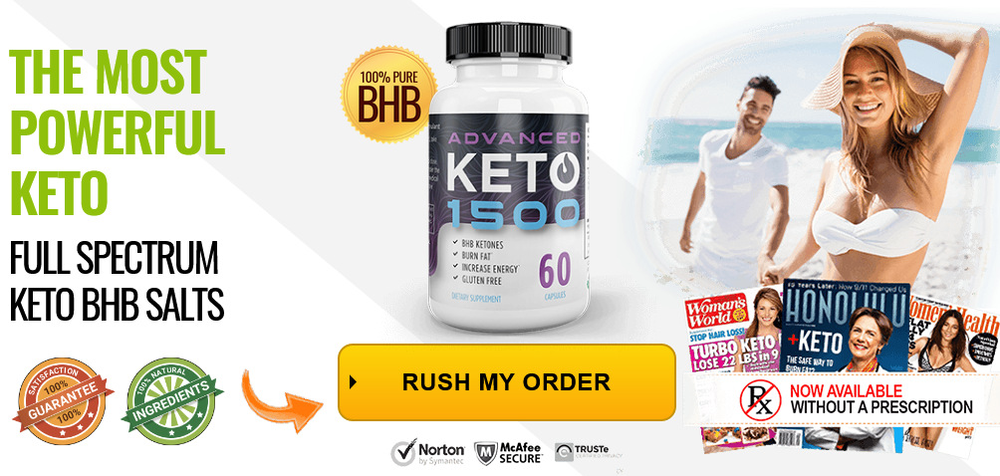

What is Keto Advanced 1500?
Keto Advanced 1500 is a dietary supplement that works effectively to curb nerve pain and help you lead a healthy and fulfilling life. To serve your health by ridding you of neuropathy, this formula uses only natural ingredients. Since it comes from a reliable company called PhytAge Labs.
How Does Keto Advanced 1500 Work?
To understand the working of Keto Advanced 1500, you will first need to know what causes neuropathy in the first place. You see, there are several pain triggers in your body which can be activated for several different kinds of reasons. For instance, some people experience nerve pain because they have diabetes.
When these pain points are activated, nerve pain occurs. Symptoms such as inflammation may also accompany which further worsen the problem. The only way to put an end to nerve pain is by means deactivating the pain triggers that start the problem. What this supplement does is that it uses natural agents to shut down pain at its core.
Its healing agents go to the site of pain and turn off pain triggers which are causing pain. Apart from dealing with this central issue, symptoms such as inflammation are also controlled so that the condition doesn’t get a chance to spread and get worse. This is how this dietary supplement works so that you can be relieved of nerve pain and its many nasty symptoms.
Pricing and Where to Buy Keto Advanced 1500?
You will be able to get one bottle of it for just $59.95. If you want more bottles, you can fetch them at a better discount of $49.95. Since the product can be used for more than a year, you can buy in bulk for use later. This is a good idea as price may rise.
Get Keto Advanced 1500 Now >>
Product Name : Keto Advanced 1500